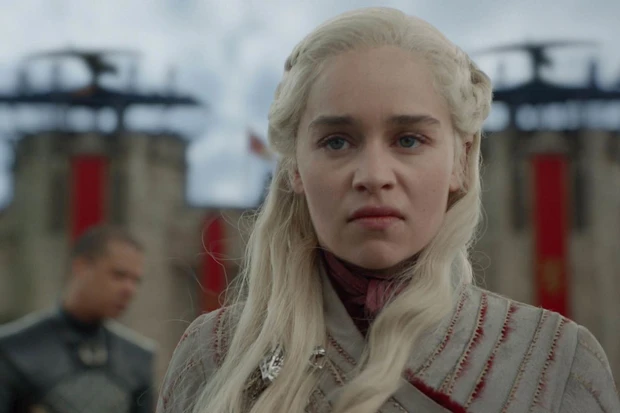

Tình cảm của khán giả dành cho "Game of Thrones" gần mất sạch dần đều sau từng tập của mùa 8!
"Lạc trôi" xa như lời tiên tri về Azor Ahai, Game of Thrones (Trò Chơi Vương Quyền) mùa 8 cũng đã đi quá xa khỏi những hứa hẹn về một cái kết hoành tráng và cảm xúc dành cho người hâm mộ. Giờ đây, những cảm xúc duy nhất mà bộ phim mang lại là sự ức chế kéo dài và tăng mạnh dần đều bên cạnh điểm số ngày một thấp trên các trang đánh giá. Ai xem xong cũng đều có chung một câu hỏi: "David Benioff và D. B. Weiss đã làm cái quái gì Game of Thrones thế này?"

1. Các nhân vật thông minh giờ bỗng "ngu" dần đều?
Ngay từ những mùa đầu tiên, Game of Thrones đã gây sốc với việc giết chết hàng loạt nhân vật quan trọng. Khán giả có thể ức chế ban đầu nhưng sẽ dần hiểu ra vấn đề nếu suy ngẫm kỹ càng. Ned Stark (Sean Bean) chết vì không biết tự lượng sức mình khi dám đe dọa cả nữ hoàng bằng một bí mật động trời và tin người thái quá. Robb Stark chết vì bội tín và không biết quản lí tướng lĩnh.
Thế nhưng bắt đầu từ cái chết của Littlefinger (Aidan Gillen), loạt phim đã cho thấy sự đuối sức hẳn trong khâu biên kịch. Không còn sự cố vấn của George R. R. Martin, David Benioff và D. B. Weiss không biết cách xử trí ra sao những nhân vật thông minh như Petyr Baelish, Varys hay Tyrion Lannister (Peter Dinklage). Cách giải quyết tốt nhất là... giết bớt hoặc cho "ngu" dần đều.
Vốn là một nhân vật đầy mưu mẹo và luôn tính trước đường lui, Petyr lại "quên" mất Bran là Three-Eye Raven (Quạ Ba Mắt) với khả năng nhìn thấy quá khứ mà cứ một mực ở lại Winterfell. Gã cũng quên luôn bản thân chẳng có bất kì đồng minh hay đường lui nào ở đây một khi mọi chuyện bại lộ. Hình ảnh gã bị nhà Stark "đấu tố" rồi giết chết đã mở đầu cho những bước lùi của Game of Thrones.

Trong khi đó, Tyrion - sau một hành trình dài để trở thành quân sư của Daenerys Targaryen (Emilia Clarke) - cũng chẳng làm được gì ngoài trừ "ăn hại". "Chàng lùn" có lẽ là công thần của nhà Lannister khi góp công rất lớn trong việc khiến Mẹ Rồng mất gần hết quân đội qua 2 mùa phim chỉ bằng việc ngăn cản tấn công King's Landing chỉ vì lo người dân sẽ "sợ".
Suốt cả mùa 8, Tyrion chẳng làm việc gì ngoài trở uống rượu rồi thở ra những câu triết lí sáo rỗng chẳng đi đến đâu, chứng tỏ mình trung thành rồi ngay sau đó thì lại phản bội bằng cách thả tù nhân hay tiết lộ những bí mật động trời của nữ hoàng. Đâu rồi những màn đấu trí nơi hậu trường đầy khốc liệt? Đâu rồi những câu thoại đầy ẩn ý và sâu sắc, mưu mô và thủ đoạn?

2. 7 năm trời phát triển nhân vật, nay còn đâu?
Ngoài việc "triệt hạ" các nhân vật thông minh, những cái tên trong dàn diễn viên chính - vốn được George R. R. Martin xây dựng suốt nhiều mùa phim - cũng bị phá nát không thương tiếc. Cho tới giờ, khán giả vẫn chẳng biết Jon Snow (Kit Harington) được hồi sinh để làm gì khi chẳng có bất kì "tích sự" gì kể từ 2 mùa qua. Dẫn quân chiếm lại Winterfell sao? Anh chàng xem khiến tất cả chết sạch nếu cô em gái Sansa (Sophie Turner) không đến cứu kịp thời cùng kị sĩ xứ Vale.
Chống lại Night King (Dạ Đế) chăng? Thật tình mà nói thì nếu loại bỏ Jon Snow ra khỏi tập 3 thì kết quả phim cũng chẳng thay đổi là mấy. Anh chàng làm gì trong tập 5 của mùa 8 vừa rồi? Ai cũng thấy rằng Jon chỉ biết đứng và tỏ ra bất ngờ mà thôi. Nếu trong tập cuối, đứa con nhà Targaryen này không lên ngôi vua hay giết chết Daenerys thì đúng là vừa "không biết gì" (know nothing) vừa "chẳng làm gì" (do nothing).
Daenerys Targaryen cũng chẳng khá khẩm gì hơn khi bị ép để trở thành Mad Queen (Nữ hoàng Điên) như cha mình một cách phi lí. Cô là người đã từng thề sẽ đập vỡ xiềng xích, giải phóng nô lệ nhưng chỉ sau vài cái chết của thuộc hạ lại nhẫn tâm thiêu rụi cả kinh thành với hàng trăm nghìn người dân vô tội dù họ đã gióng lên hồi chuông qui hàng.
Đây là hành động của một người từng cam chịu mọi khổ đau để bước lên ngôi nữ hoàng sao? Cái cớ rằng ở Meereen, nô lệ nổi lên giúp cô giết chủ nô chỉ là sự lấp liếm của biên kịch khi King's Landing chẳng theo chế độ chiếm hữu nô lệ còn Mẹ Rồng thì chưa bao giờ lên tiếng kêu gọi nhân dân nổi dậy.

3. Lẽ ra, Night King phải là trận chiến cuối cùng, nhưng rồi sao?
Theo tác giả George R. R. Martin, Night King mới chính là cuộc chiến cuối cùng của con người và những tranh đấu quyền lực kia chỉ là trò hư ảo. Đó mới chính là ý nghĩa cuối cùng của A Song of Ice and Fire. Nhưng khi David Benioff và D. B. Weiss đổi tên thành Game of Thrones thì mọi thứ đều thay đổi theo.
Mùa 8 của phim đã "lừa" tất cả khán giả với những tấm poster, quảng cáo đều cho rằng Night King là cái kết lớn nhất. Câu cửa miệng "Winter is Coming" (Mùa Đông Đang Đến) của nhà Stark không phải một trò đùa còn tên "trùm cuối" này thì đã có tới 7 mùa phim đi bộ chỉ để đến được Westeros.

Song, Long Night (Đêm Trường) hóa ra chỉ là một đêm "hơi dài" hơn mọi tập khác mà thôi. Trận chiến với Night King được dàn dựng công phu và hoành tráng nhưng vẫn chỉ kết thúc chỉ sau một tập. 7 năm trời chờ đợi của khán giả chỉ được đánh đổi bằng 80 phút chóng vánh. Hóa ra, Ned Stark đã đúng, White Walkers (Bóng Trắng) chỉ là trò đùa không hơn không kém.
Khi Arya (Maisie Williams) phi thân vào giữa một bầy xác sống và đâm thanh đoản đao vào người Night King thì người xem chợt nhận ra rằng đang theo dõi một loạt phim siêu anh hùng kia. Cái chết phi lí của gã cũng khiến truyền thuyết về Azor Ahai tan thành bọt biển và những nhân vật được xây dựng theo lí tưởng trên cũng chẳng còn đất dụng võ.
Tổng kết:
Game of Thrones vẫn sẽ là một trong những loạt phim truyền hình lớn nhất thế giới suốt nhiều năm qua. Song, những gì mà nó để lại trong lòng khán giả chắc chắn không phải những kỉ niệm đẹp mà là sự ức chế và hụt hẫng. Giá như mùa 8 được bằng một nửa những mùa trước thì ta đã có thể khép lại một đoạn tuổi trẻ như Endgame được rồi.